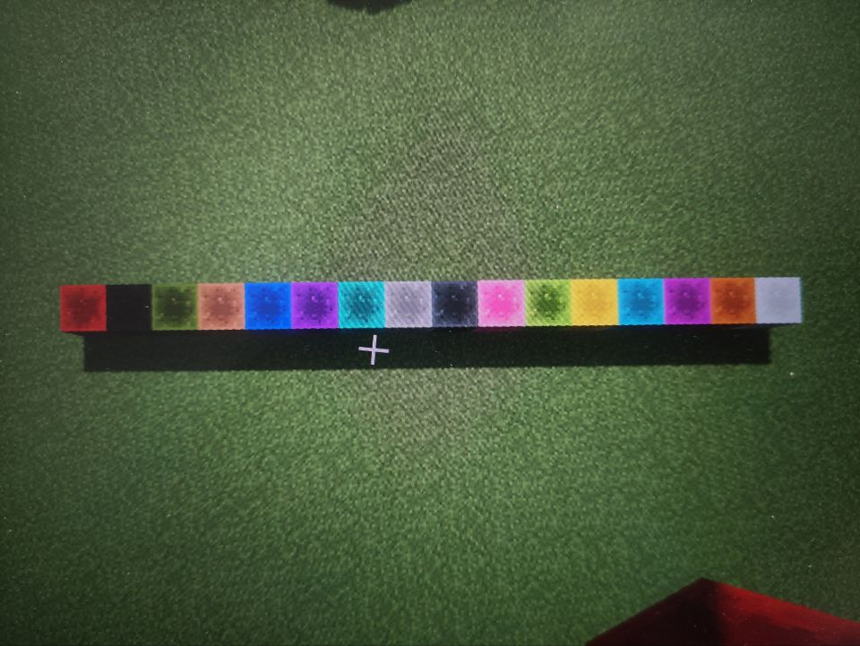

聊聊红石音乐
咕极必肝，肝极必咕。
本来是打算做完 Ancient Temple 和视频一起发出的，但现在看到这篇文章，说明下文随想里立下的 flag 已经被打脸了（
咕的原因，一方面是因为现实生活太过充实有趣，即使红乐般的激昂也有黯淡之时；但更重要的，还是对第二次迭代的表现效果不满意。模子是 Foxtail Grass Studio 的专辑封面和《妖妖剑戟梦想》的白玉楼阶梯，但始终没能做出想要的效果。更好的想法？暂时也没有。
半途而废很可惜，但糟蹋更可惜。或许暂时搁置、静待花开，会有更好的结果。
写下随想与技术细节，封存于冷清的博客，是纪念，还是重启的依托？
东方的天空微微露出青白色的天光，幻想乡迎来了又一个清晨。
很快，太阳就会出现，将光芒洒满这片遗忘之地。
尽管，那片原野已然如幻梦般消失不见——
但，在看不见的隐秘角落，无数的原野正在悄然生长——
这里也是，那里也是
——如同小小的光芒。
——东方莳梦原～Champaign of Unfinished Dreams by 秋ノ宮飛鳥
一点随想
2022 年 8 月 17 日夜，Ancient Temple 完成过半，月色入户，欣然开摆。
对，今天又是 8 月 17 日，是妖妖梦、风神录的发售日，也是某个枪毙节，还是某个新博客启用的周年纪念日——我又来写随想了。
18 年华灯宴 1U_s 大佬一曲十七岁把我拉入红石音乐的大坑，到现在也有 4 年多了。随便聊聊感想，谈谈技术和非技术的各种话题。
我玩红乐，或许“科技靠考古的自闭造轮手”是个不错的形容。不加红石群、不更新版本，没人带没人陪，Google + Minecraft Wiki 在手，自己瞎倒腾，其他看造化。风格是 18 年的远古遗风——realpiano + 命令方块 + WorldEdit 的前进式、贪吃蛇式、下落式红石音乐大行其道的年头。到后来，特效红石音乐开始流行，但我心中的红乐早已定型。
我喜欢那个年代红石音乐特有的那种风格，那种朴素，但红石音乐完美融入场景的感觉。当年东方各作红石音乐全曲中就可见一斑——跟随红石信号一步步向前，如同听着 BGM 驾驶自机飞翔于道中，看版面缓缓向前伸展——STG 原作与 Minecraft 的奇妙融合让我着迷。我想做这样的红石音乐，我想做这样能化出心中幻想的红石音乐。
想做？音乐你懂吗？建筑你会吗？
不会，但可以学！
那你还会什么？
我是 OIer！我会编程！
这就是后来近三年红乐自动化尝试的开端。倒也开始稍微认真点的学习 MIDI、乐理以及其他各种各样的东西。
时间来到 20 年暑假。当时正好在玩 Python，偶然一搜，找到了 Raspberry Jam Mod 和 mido——前者把 https://www.minecraft.net/en-us/edition/pi 的 Python API 移植到 Java 版，后者提供在 Python 中处理 MIDI 文件的方法。
诶，这就不可以开工了吗！
肝能量发动，写了第一个能跑起来的脚本，随便丢了个正在做的第三版 Ancient Temple 进去听听——哎哟挺不错啊！
生产力工具上线，整活得以开始。要说最想做的，那一定是妖妖梦五面道中。对，就是 《东方妖妖梦 ~ Ancient Temple》。如 ZUN 所说，那是使古老寺院的空气突然升温的曲子。樱花上飘，楼观斩下……那是原作带来的难以忘怀的幻想。
但当时的我，没打算做，或者说有点不敢做。一方面，当然是 1U_s 大大的妖妖梦红乐曲集实在精彩，随手制作的五面道中已足以满足我自娱自乐的需求；二来也是对自己实力不太自信，怕做出自己也不太喜欢的作品。但 1U 的曲集毕竟是手工打造，两条音轨虽然意境极佳，但与原曲相比确也是捉襟见肘，而我手中的自动化可以极大程度地减轻工作量（虽然造轮子的过程没少花时间 (lll￢ω￢)）
所以到头来还是想做——或者下次一定？
那这次造啥呢？
余光瞄到刚退坑不久的 Dancing Line——说是舞线，其实脑子里全是 Through the Fog 的场景。回去重打 TTF 风暴的时候，听着 90% 后疯狂的雷声，突然想到 Minecraft 可以 /weather rain 可以 /summon lightning_bolt，加之场景想要偷懒的话搞个单层水世界就行，倒是试水的不错选择。
于是就开始试着扒谱。暑假结束，MIDI 是写好了，人却咕起来了。一咕就咕到了后一年的四月，忍不住了，爆肝三个周末整出来了。这个明显还是有很多问题的，首先曲子扒得就不太好，而且灯光一直到最后一小段才加上，另外前面下雨那段也太黑了。Sildur’s Vibrant Shader 的黑雷电问题也没解决，加上当时电脑太菜，Replaymod 录制还是挺难受的（不过预览模式倒是意外的贡献了个封面 XD），当然凑合能看。
后来就又到暑假了，打算一口气把 RMG 这个烂摊子写好，于是大刀阔斧的重构了，命名为 redstone-music-generator，甚至还写了文档发了 Github，收获人生首 star & issue（
或许是为了尝试 observer 的设计模式，亦或是太重视轮子的易用性，代码比较臃肿，过了几个月发现自己也很难看懂了。
其实写脚本主要还是给自己创作使用啊，没必要考虑太多“别人的需求”。
反思的结果就是新版的 redstone-music-generator 了，现暂存于原版本的 develop 分支下。这个版本再次重构，学习了某些命令行软件的做法，配置参数从之前在各个组件上的零散分布变为了单一配置文件的集中分布，显然提高了效率。
Ancient Temple 的 MIDI 也已经做到第五版了，这次以红乐的标准，大幅参考原曲 MIDI，期望能尽力还原出原作的表现。
鼓起勇气脱离咕海的动力来源，还是喜欢这曲子吧。说到底还是想把它做了再养老。
说起来，红石音乐到底应该怎样定义呢？之前 WorldEdit 的使用就已经引发过争议，那自动化搭建到底是红是黑？而在发声方面，是坚持音符盒的原教旨主义，还是命令方块的改良革新，甚至是更激进的 Midiout？
up辛苦了，工作量能看出来。
但是原谅我还是很难接受这种从mc映射到外部midi播放器的格式。我觉得这并不能称作红石音乐，因为不是在mc内部完成播放的。
不过，用资源包和用接口，也不过只是内部调用和外部调用的区别罢了，也说不清…这是个哲学层次的问题。
红石音乐最后到底会变成什么样我也不知道，而且这种发展的方向和趋势我也没办法也没有理由去阻止。
我大概是，跟不上时代了吧…
或许每个人心中的红乐标准都有所不同……或许我们只能求同存异，力求百花齐放，不要走火入魔。但最近粒子特效红石音乐的发展又让我感到困惑——一点红石、音符盒甚至命令方块都不出现，真的算红乐吗？那些炫酷的粒子特效，真的属于 Minecraft 吗？
只能交给时间回答了。我想，我能保证的，只是一颗全心投入、宁缺毋滥的创作心态；而我应该做的，是继续完成手头的作品。
MC 指令相关
setblock, dataValue, block state and data tag (nbt)
扁平化前（1.12 及以前）
setblock <x> <y> <z> <block> [dataValue|state] [oldBlockHandling] [dataTag]
dataValue 和 blockstate 在扁平化之前是方块状态的两种不同描述方式，dataValue 是实际存储时使用的 4 bit 数据。通常，blockstate 或 dataValue 用来描述方块的一些基本性质，比如朝向 facing、羊毛的颜色 color、中继器的延迟刻数 delay。
具体写法例如：/setblock ~ ~ ~1 minecraft:unpowered_repeater delay=4,facing=east 设置一个延迟为 4 rt，面朝“东方”的红石中继器。（这里打上了引号，因为事实上红石中继器的 facing 代表的方向与信号传导的方向是相反的）
又，其效果等同于 /setblock ~ ~ ~1 minecraft:unpowered_repeater 15。（dataValue = (delay - 1) * 4 + facing，facing=south|west|north|east 分别对应 0|1|2|3 。默认值是 north）
再例如，/setblock ~ ~ ~1 minecraft:command_block facing=down 0 {Command:"/time set 6000"} 设置一个修改时间为正午的，面朝下方的命令方块。
中间的 0 是用来占位的。
查找某方块的 dataValue 和 blockstate 时可以翻阅 Minecraft Wiki 1.13 以前的历史版本（1.13 于 2018 年 6 月 18 日发布）
扁平化后（1.13 及以后）
setblock <pos> <block> [destroy|keep|replace]
其中 <block> 是 block_state， 具体的写法是 namespaced_ID[block_states=value]{data_tags:value}
也就是说，原先的 block、block_state 和 dataTag 现在被统一整合入 block_state 里面，显然这更方便使用了。（然而作为考古学家，这好像也没法用上…）
FallingSand or falling_block
掉落方块实体。1.11 前它叫 FallingSand，1.11 及以后它叫 falling_block。
1.12 及以前可用 /summon falling_block ~ ~ ~ {Block:minecraft:redstone_block,Time: 1} 召唤掉落的红石块。Time 参数设置最长掉落时间，实际上会与 30 秒取最大值，但如果留空则会马上消失。
而 /summon falling_block ~ ~ ~ {Block:"minecraft:wool", Data: 14, Time:1} 可召唤掉落的红色羊毛。Data 标签自然与颜色对应了。
1.13 后由于扁平化更新了 block_state 的概念，指令格式变为 /summon falling_block <x> <y> <z> {BlockState:{Name:<Namespaced block ID>,Properties:{<blockstate_name>:<value>}}}。
参见：
解决指令引号嵌套无法识别问题
mod、资源包
注意此处提到的 mod 和资源包均只在其 1.12.2 对应版本下测试，不少功能在新版已经不需要 mod 了。
WorldEdit
建筑党老相识了，不细讲了，Google 一下你就知道。
用的多的命令 copy、flip、rotate、paste、stack、set、replace。当然还有最要命的 undo 啦（
schematic 系列指令也很好用（用来偷建筑）（逃）
VoxelMap
常见的小地图，用来传送挺方便的。也不细讲了。
TickrateChanger
TickrateChanger - Mods - Minecraft - CurseForge
tickrate changer，就是字面意思嘛。改 tickrate 可以使游戏变快或变慢，从而实现精确调节 BPM。正常值 20。
但是有个挺烦的问题是调了过后声音的频率也随之改变了，这样音高就发生变化了…有大佬知道怎么办吗？
Colored Redstone
Colored Redstone - Mods - Minecraft - CurseForge
材质包编辑红石颜色失败后的替代品。具体细节有点忘了，只记得生成时 namespace 好像是 coloredredstone:colored_redstone_block，用 datavalue 来调颜色。（也忘了自己是怎么知道的了……好像是拆 jar 看的？）
顺序大概是这样：

InvisibLights
InvisibLights - Mods - Minecraft - CurseForge
材质包编辑发光材质失败后的替代品。字面义，作为隐形光源使用。
realpiano 资源包
发声命令 /execute @p ~ ~ ~ playsound lkrb.piano.p60fff voice @p ~ ~ ~"，C5 = 60，音高 21 至 108，力度可选 ppp,pp,p,mp,mf,f,ff,fff。
soma 资源包
这个老强了，按 MIDI 音源标准制作的全套音色，长短音都有。
因为没怎么用就不细讲了。
材质包编辑
一开始是因为 SEUS v11.0 太黑看不清红石块，想找个方法让红石块自发光 。找了半天没找到的现成的，只好现学现做。
关于如何获取作为参考的 Default 材质包，参考 Where can I find the default texture pack to edit? : Minecraft，直接把 1.12.2.jar 解压后里面的 assets 文件夹提到资源包里就可以用了，意外的方便啊（
（其实 mod 的 jar 里面也有这个文件夹！）
参考 Emissive Textures - OptiFine documentation，只需在材质包放置 /assets/minecraft/optifine/emissive.properties 和 /assets/minecraft/textures/blocks/redstone_block_e.png，emissive.properties 里写上 suffix.emissive=_e 就可以了。
1.12 差不多也算是古董版本了，参考网上教程时还需注意版本差异。
于是兴高采烈的准备用到掉落式红石钢琴上，发现——欸？光呢？？？
于是发现了 Emissive textures not working for certain entities and items · Issue #1342 · sp614x/optifine · GitHub——woc，这不是 xwj 大佬吗？？？
所以人家 18 年就把这些东西玩透了……只有红石音乐作者才能发现的 bug
这个 Issue 至今 open，一下不知道怎么办了…只能暂时搁置。后来使用上文提到的 Colored Redstone 和 invisiblights 解决问题。
此外，发现同一地点方块贴图始终一致，这说明随机种子由位置决定。但作为 Falling_block 生成时，全都只会用第一个贴图。
MCPI 和 RaspberryJamMod 相关
RaspberryJamMod：把 Minecraft: Pi Edition 的 Python API 移植到 Java 版的一款 mod。
- Github 库：GitHub - arpruss/raspberryjammod: Raspberry Jam Mod - a Mod Forge Minecraft mod implementing most of Raspberry Juice/Pi API
- 官方指南：Python Coding for Minecraft : 18 Steps (with Pictures) - Instructables
- Minecraft: Pi Edition 的 API：Minecraft: Pi Edition API
MCPI Block 类在 setBlock & setBlockWithNBT 中的使用
Block 类被封装成了包含三个元素 id:int, data:int, nbt:str 的“数组”，在 setBlock 和 setBlockWithNBT 中直接使用 Block 类会被 flatten() 或 floorFlatten() 函数“拍扁”成分散的参数。一个 Block 对象只可能被拍扁成 data, id 或 id, data, nbt，取决于该对象是否设置了 nbt （用 None 判断）。
因此，需要自定义 data 时，不能使用 block 模块的预设方块。
Vec3 类也可被拍扁。
例如：
setBlock(Vec3(0,0,0), 137, 2)等同于mc.setBlock(Vec3(0,0,0), Block(137, 2))setBlockWithNBT(Vec3(0,0,0), 137, 2, '{Command:"your command"}')等同于setBlockWithNBT(Vec3(0,0,0), Block(137, 2), '{Command:"your command"}')等同于setBlockWithNBT(Vec3(0,0,0), Block(137, 2, '{Command:"your command"}'))
需要注意的是， setBlock() 不能接受 nbt 参数或带 nbt 的 Block 对象，否则会报错。而 setBlockWithNBT() 则有无 nbt 皆可。
关于 MCPI 与游戏内的坐标差
见 Python + Minecraft Coordinates Trouble - Stack Overflow：
getPos, getTilePos, setPos and setTilePos all appear to be relative to the player’s spawn point at least in a single player world. I am going through trying to teleport my character but the coordinates I end up on are not the world’s coordinates but a coordinate relative to where my character would spawn.
So, either fix an offset of 66 blocks into the y-axis values, or manually set the world spawn to
(0, 0, 0)with/setworldspawn.
自制轮子
redstone-music-generator（旧版）
（这是重构旧版前再次阅读代码后的小报告）
大概使用了 observer 的设计模式，写了类似 C# 中的 Event，Delegate 暂时还没有封装，稍微有点混乱。
自己写了一些工具类，然后弄了个 MIDIHandler 预处理 MIDI 文件。
整个生成在最上层由 RMG 类管，RMG 读取 MIDIHandler 的信息然后触发绑定在 RMG 上的各种 onNote()、onBeat() 函数（触发过程由封装的 Event 类实现）。通过设置 RMG 的成员变量可以设置例如要生成的音轨、起始终止拍等参数。
然后各种插件都丢在了 observer.py 里。这些插件接受各种需要的信息（当前音符编号、音高等），一些是用于生成 Vec3 或 Block 的 XXXPosGen 和 XXXBlockGen（还没有给他们写基类，主要是现在还没封装 Delegate），另一些是包含 onNote()、onBeat()，用来绑在 RMG 上的插件。（注意绑在 RMG 上的是函数而不是插件本身！）每个插件都有自己的参数，插件之间也可以相互嵌套（例如 GroundedAdvancing 里面就套了个 SingleBlock）。插件存在的目的是为各个输出函数 onNote()、onBeat() 统一设置参数。（这里是否可以再改的函数式编程一点？）
现在有一个问题就是 PosGen 和 BlockGen 分开了，有 Issue 提到想要自定义每个 Note 下放的 partBlock，像这样搞就很麻烦。
应该有一个把 PosGen 和 BlockGen 合起来的方案，最好是能独立表示多个方块及其位置信息的一个整体。
redstone-music-generator（新版）
TODO（咕咕咕）
temp: /execute @p ~ ~ ~ playsound block.note.guitar voice @p ~ ~ ~